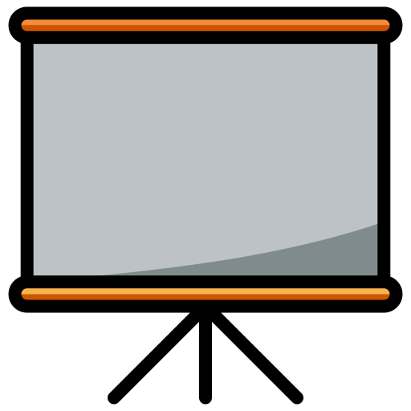

List of publications by category, sorted by chronological order
Articles published in international journals or revues
- Multivalued component tree: New results and a bridge between partial and total partition trees
- Published in Journal of Mathematical Imaging and Vision (JMIV), 2025
- Authors : Nicolas PASSAT, Romain PERRIN, Jimmy Francky RANDRIANASOA, Camille KURTZ, Benoît NAEGEL
- Citation : Passat, N., Perrin, R., Randrianasoa, J.F., Kurtz, C., Naegel, B. (2025). Multivalued component tree: New results and a bridge between partial and total partition trees
- Online paper [TO APPEAR] , Accepted paper [TO APPEAR], HAL archive (paper)
Articles published in international conferences
- New Algorithms for Multivalued Component Trees
- Published in 27th International Conference on Pattern Recognition (ICPR), 2024
- Authors : Nicolas PASSAT, Romain PERRIN, Jimmy Francky RANDRIANASOA, Camille KURTZ, Benoît NAEGEL
- Citation : Passat, N., Perrin, R., Randrianasoa, J.F., Kurtz, C., Naegel, B. (2025). New Algorithms for Multivalued Component Trees. In: Antonacopoulos, A., Chaudhuri, S., Chellappa, R., Liu, CL., Bhattacharya, S., Pal, U. (eds) Pattern Recognition. ICPR 2024. Lecture Notes in Computer Science, vol 15323. Springer, Cham. https://doi.org/10.1007/978-3-031-78347-0_2
- Online paper, Accepted paper, Conference poster, HAL archive (paper + poster)
- Multi-Scale Component-Trees for Enhanced Representation in Multiplex Immunohistochemistry Imaging
- Published in 2024 IEEE International Symposium on Biomedical Imaging (ISBI), 2024
- Authors : Romain PERRIN, Aurélie LEBORGNE, Nicolas PASSAT, Benoît NAEGEL, Cédric WEMMERT
- Citation : R. Perrin, A. Leborgne, N. Passat, B. Naegel and C. Wemmert, "Multi-Scale Component-Trees for Enhanced Representation in Multiplex Immunohistochemistry Imaging," 2024 IEEE International Symposium on Biomedical Imaging (ISBI), Athens, Greece, 2024, pp. 1-5, doi: 10.1109/ISBI56570.2024.10635272. https://doi.org/10.1109/ISBI56570.2024.10635272
- Online paper, Accepted paper, Conference poster, HAL archive (paper + poster)
- Multi-Scale Component-Tree: A Hierarchical Representation for Sparse Objects
- Published in IAPR Third International Conference on Discrete Geometry and Mathematical Morphology (DGMM), 2024
- Authors : Romain PERRIN, Aurélie LEBORGNE, Nicolas PASSAT, Benoît NAEGEL, Cédric WEMMERT
- Citation : Perrin, R., Leborgne, A., Passat, N., Naegel, B., Wemmert, C. (2024). Multi-scale Component-Tree: A Hierarchical Representation for Sparse Objects. In: Brunetti, S., Frosini, A., Rinaldi, S. (eds) Discrete Geometry and Mathematical Morphology. DGMM 2024. Lecture Notes in Computer Science, vol 14605. Springer, Cham. https://doi.org/10.1007/978-3-031-57793-2_24
- Online paper, Accepted paper,

Conference slides, HAL archive (paper + slides)
Articles published in national conferences or worshops
- L'arbre des coupes multi-échelles pour une meilleure représentation dans l'imagerie immunohistochimique multiplex
- Published in Colloque Français d'Intelligence Artificielle en Imagerie Biomédicale (IABM), 2024
- Authors : Romain PERRIN, Aurélie LEBORGNE, Nicolas PASSAT, Benoît NAEGEL, Cédric WEMMERT
- Citation : R. Perrin, A. Leborgne, N. Passat, B. Naegel, C. Wemmert (2024). L'arbre des coupes multi-échelles pour une meilleure représentation dans l'imagerie immunohistochimique multiplex. Colloque Français d'Intelligence Artificielle en Imagerie Biomédicale (IABM), Grenoble, 2024.
- Online poster (#111), Conference poster, HAL archive (poster)
Published PhD Thesis
- Hierarchical multi-scale structures for histological image analysis